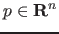

Next: Equilibrium initialization Up: Bifurcations and their normal Previous: Bifurcations and their normal Contents
The location of Hopf and limit points usually does not cause problems. However,
the location of branch points can give problems. The region of attraction of the
Newton type continuation method which is used, has the shape of a cone (see [2]).
In the localisation process we cannot assume to stay in this cone.
This difficulty can be avoided by introducing
 and
and
considering the extended system:
The tangent vector at the singularity is also computed here. This is related to the processing of the branch point (computing the direction of the secondary branch).